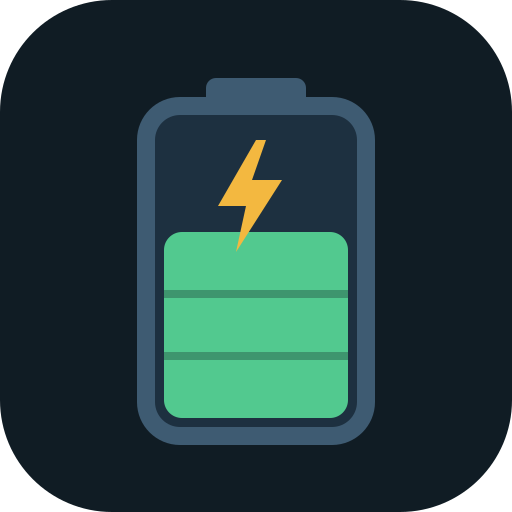
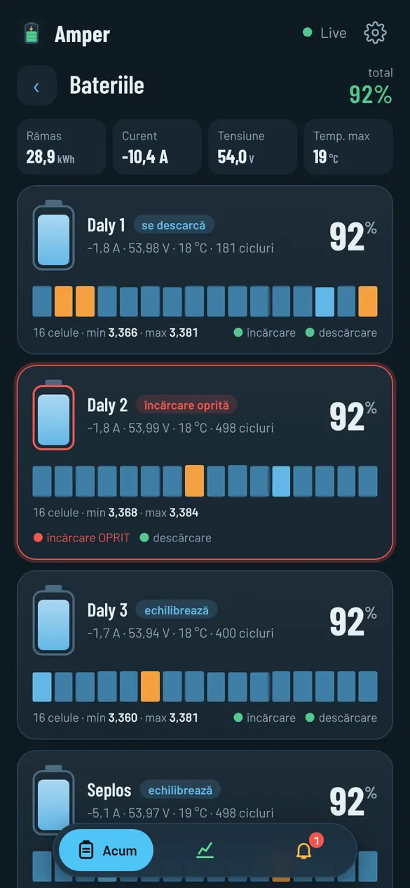
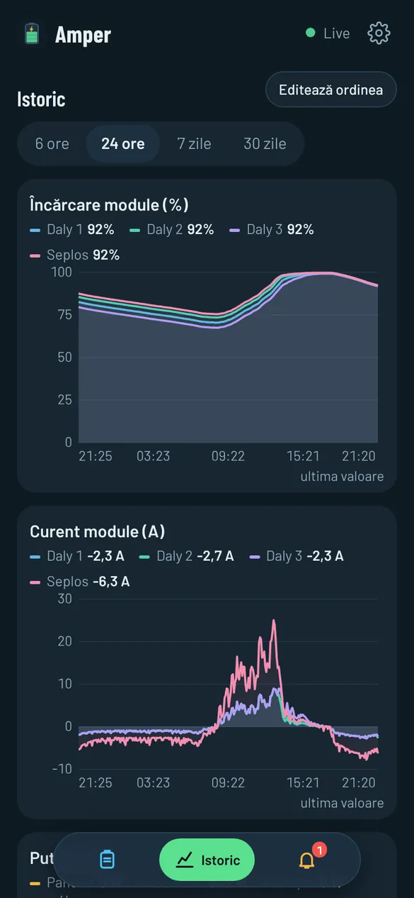
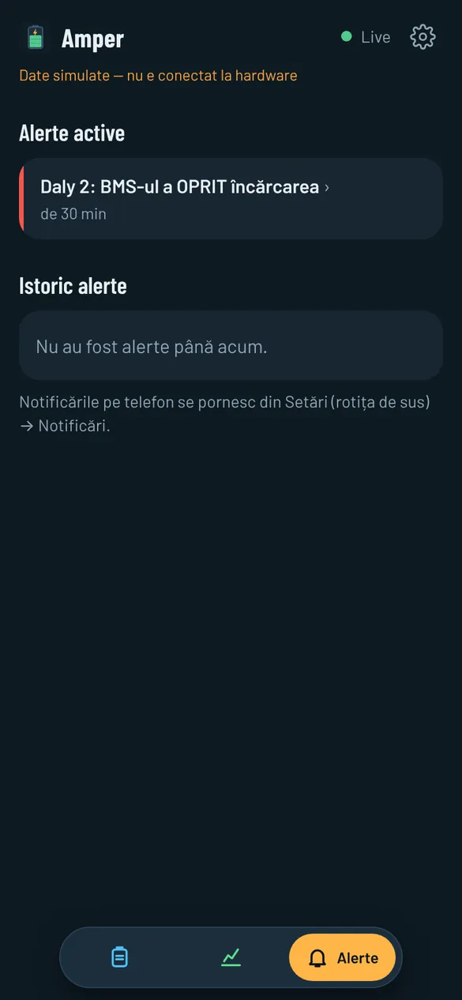

AmperAmper rulează pe un Raspberry Pi legat la bateriile și invertorul instalației tale solare. Vezi în timp real fiecare modul și fiecare celulă, și afli pe telefon imediat ce ceva nu e în regulă, de exemplu când un BMS oprește încărcarea fără să semnaleze.
Tot ce îți trebuie ca să știi ce fac bateriile, fără abonament și fără server străin: datele stau la tine, pe Pi.
SOC-ul total și al fiecărui modul, curent, tensiune, temperaturi, cicluri, starea MOSFET-urilor și toate cele 16 celule, în timp real.
Când un BMS oprește încărcarea sau descărcarea, o celulă se apropie de limită, se pierde legătura sau invertorul raportează un defect. Plus alertele tale (de ex. „SOC sub 30%”).
Cât produc panourile, cât consumă casa, cât intră sau iese din baterie și cât timp mai ajunge, cu energia pe fiecare zi.
Grafice pe 6 ore, o zi, o săptămână sau o lună: SOC, curent și puteri pe fiecare modul.
Acasă, pe WiFi, sau de oriunde, printr-o adresă sigură (https), cu parola ta. Se pune pe ecranul telefonului ca o aplicație.
Actualizări semnate, instalate când vrei tu. Dacă o versiune nu pornește, Pi-ul revine singur la cea dinainte. Datele și setările rămân.
Trei teme, toate întunecate, gândite pentru telefon și pentru un ecran pe perete.



Amper găsește singur dispozitivele, pe cablu și prin Bluetooth. Ai altceva? Scrie-ne și vedem.
Fără comenzi și fără calculator după primul pas. Ghidul complet e aici.
Descarci imaginea și o scrii pe card cu Raspberry Pi Imager (Use custom). Fără personalizare.
Legi adaptoarele și pornești. După 3–4 minute apare rețeaua WiFi „Amper-Setup”.
Te conectezi din telefon la „Amper-Setup”, alegi WiFi-ul tău și scrii parola lui.
Nume, parolă, dispozitivele găsite singure, notificările. Gata.